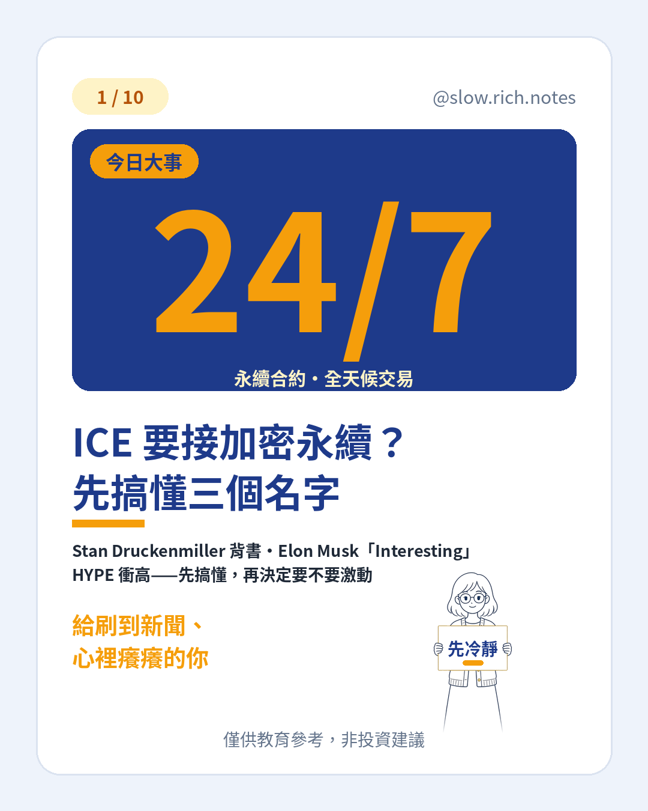

刷到「今日大事」：Stan Druckenmiller 罕見發文投資 Trade.xyz、ICE（NYSE 母公司）官宣要把 Hyperliquid 的「24/7 永續合約」合規帶進美國、Elon Musk 回一句 Interesting——話題被放大。標題可以熱，答案可以冷靜。
先搞懂三個名字。Hyperliquid 是加密圈裡很紅的去中心化交易所；Trade.xyz 在上面做「真實世界資產」的永續合約（用合約交易漲跌，不是直接買那張股票）；ICE 則是傳統金融的交易所與清算巨頭。合作重點是把這類產品放進美國監管能接受的框架——還要過審批，不是明天就能上。
24/7 對散戶意味什麼？半夜也能交易＝方便，也更容易衝動；槓桿是放大器；新聞半夜跳出，醒來部位可能已大變。多了「隨時能動」，少了「等開盤再想」的緩衝。HYPE 報導當日約漲一成多、盤中約破 $95（約數，會變）。美國合規版還沒開張；敘事≠現金流，上次類似熱度也常會褪。
帶回去一句：大戶投資「管道」≠ 跟單；名人一句話也不是進場指令。想把基礎補齊，可先看 看不懂財經新聞？先學這 10 個詞，以及同為「熱話題先拆事實」的 幣安疑遭駭：凍結與估算怎麼分、ANT 估值怎麼對照。現金流怎麼排，可對照 月薪也能慢慢存起來。準備好了再領 《投資新手入門清單》。
僅供教育參考，非投資建議。漲跌為約數；加密、槓桿與衍生品皆有高風險，可能損失本金；新聞與合作時程會變動。
⚠️ 僅供教育參考，非投資建議。文中若有數字，皆為假設例子，請依自己的狀況調整。投資有風險，請自行評估。